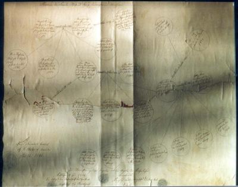

German transcription: Jakob Eberhard Werthwein geb. den 10 April 1824 lebt in Hampshire Ills in North Amerika
English translation: Jakob Eberhard Werthwein: born April 10, 1824; lives in Hampshire, Illinois, North America.
He was known simply as Eberhard, and emigrated to America before marriage. He and his family are buried in the cemetery in Hampshire, Illinois; we should photograph the stones. His son, Charles Werthwein, married Katherine Becker, born 1864 in Jacksonville, Illinois. They met when he saw an attractive photograph in the window of a photography studio, and she emerged from the studio. She lived next door to the Mary Todd family who married Abraham Lincoln.
Charles and Katherine had four children. Two died early. The other two were Pearl Werthwein (never married, had wonderful operatic voice, family sent her to Europe for training at the Sorbonne, but she had some problem with her vocal cords and an operation ended her singing career; she died in Hampshire) and Percy C. Werthwein, born May 14, 1882, in Hampshire, Illinois. Attended Univ. of Wisconsin until he withdrew so that the family could afford to send his sister to Europe. The "C" was simply an initial, with no associated name.
Percy married Alice Caroline Bruner November 4, 1911, in Chester, Iowa. She was born June 11, 1890, in Elberon, Iowa, to Adam Bruner and Anna Fromm, and she died February 18, 1984, in National City, California. They went out to South Dakota and homesteaded there. Then they returned to Hampshire.
Katherine died in Hampshire, June 20, 1948, in Hampshire.
Percy died November 18, 1935, in Waterman, Illinois, as a result of an automobile accident near Leland. He was on a hunting expedition with friends.
There is a booklet called "Kane County, 1818-1968, Illinois Sesquicentennial", with handwritten marginal notes by Alice, which has a drawing of the Werthwein farm (in Burlington township) on page 34, center left, labelled as the residence of Henry Weightman. The cupola pictured there on the barn had to be removed when they moved there in 1915. They bought the farm from the brothers Henry and William Ackerman and $141 per acre. Phyllis and her siblings were all born in the farmhouse there. One of Alice's notes says that "W. Grandpa" (Charles), Bill, Alice, and Dolly attended the Elgin Academy.
The children of Percy and Alice are: